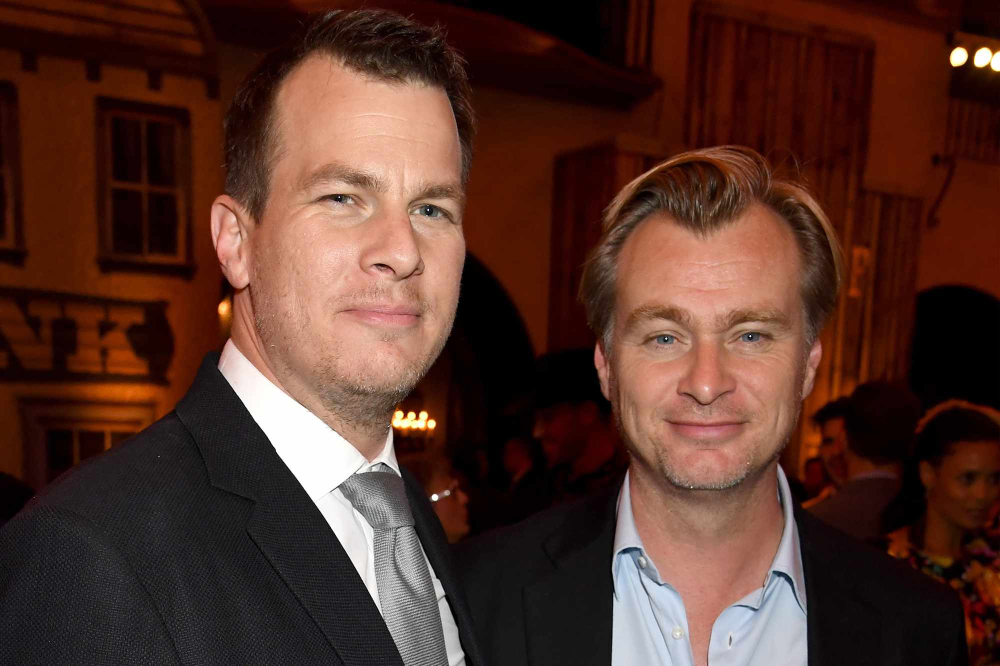

Christopher Nolan to prawdziwy czarodziej kina! Tworzy filmy, które wciągają nas w zawirowania złożonych fabuł i mrocznych klimatów.
Jego wizualne arcydzieła zapierają dech w piersiach. Urodził się 30 lipca 1970 roku w Londynie. W dwukulturowej rodzinie – tata
Brytyjczyk, mama Amerykanka. Już jako młodzieniec zafascynował się filmami. Z bratem, Jonathanem, bawił się domową kamerą, tworząc
krótkie opowieści. Później Jonathan stał się jego niezastąpionym współpracownikiem. Kto by pomyślał, że z takiej pasji powstanie
prawdziwa filmowa legenda? Nolan zgłębiał literaturę angielską na University College London, gdzie spotkał Emmę Thomas – swoją żonę i
przyszłą producentkę. Jego reżyserska podróż zaczęła się w kinie niezależnym. W 1998 roku stworzył „Following”, niskobudżetowy film,
który zyskał uznanie krytyków. To był pierwszy krok do wielkiej kariery. Sukces otworzył mu drzwi do „Memento” (2000) – psychologicznego
thrillera o mężczyźnie z amnezją, który usiłuje rozwikłać zagadkę morderstwa żony. Film podbił serca widzów i zdobył międzynarodowe
uznanie. Nolan otrzymał nominację do Oscara za scenariusz. Hollywood było już na wyciągnięcie ręki!

Jego filmy, jak "Bezsenność" z 2002 roku i Batmanowa trylogia, zaczynająca się od "Batman – Początek" w 2005, rozwinęły jego
hollywoodzką potęgę.
"Mroczny rycerz" z 2008 roku to prawdziwy fenomen! Rekordowe zyski, a krytycy? Zafascynowani jego realistycznym ujęciem Batmana.
Joker w wykonaniu Heatha Ledgera? Ikona kina! Otrzymał Oscara pośmiertnie, dodając blasku tej filmowej legendzie. Kto by pomyślał?
Nolan zdobył sławę jako twórca filmów, które nie boją się wyzwań. Kto nie pamięta "Incepcji" z 2010? To jak podróż w labiryncie snów!
A "Interstellar" z 2014? Czas i przestrzeń splatają się w niesamowity sposób! Podróż międzygwiezdna, która zapiera dech w piersiach.
Nie zapominajmy o "Dunkierce" z 2017! Ten epicki dramat wojenny to prawdziwy zastrzyk emocji. Ewakuacja, heroizm, dramat! Nominacja
do Oscara? Zasłużona!
W 2020 roku zaskoczył nas "Tenet". Kolejna warstwa akcji z nutą science fiction. Kto nie lubi gmatwać rzeczywistości?
Najnowszy film Nolana, "Oppenheimer" (2023), to prawdziwa uczta dla zmysłów! Zgadnij, kto był ojcem bomby atomowej?
J. Robert Oppenheimer! Film zyskał serca widzów, eksplorując moralne dylematy i polityczne zawirowania. Czyż nie fascynujące,
jak historia splata się z etyką?
Christopher Nolan to twórca, który stale rozwija granice kina. Znany jest z niechęci do stosowania efektów komputerowych i
preferencji dla efektów praktycznych, co daje jego filmom autentyczność i wyjątkowy styl wizualny.